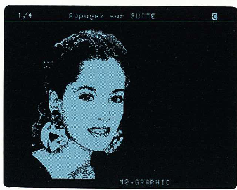
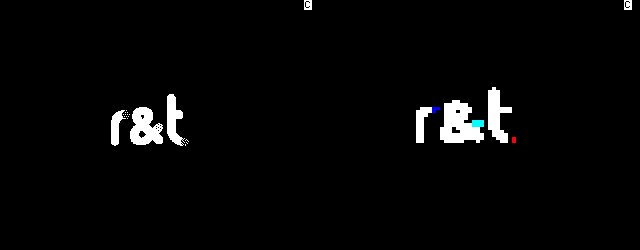

Serveur Minitel
Oct 14, 2025Pendant les vacances d’été 2025, je me suis plongé dans le monde merveilleux de la téléphonie analogique. Entre les modems, les connexions 56k et les BBS, j’ai eu l’idée quelque peu saugrenue d’acheter un Minitel. Vous savez, cet écran glorifié qui pèse presque 5 kilos et qui a plus de 50 ans… À son époque, c’était la pointe de la technologie française (oui oui française), mais France Télécom a débranché les derniers services en 2012, faute d’utilisateurs.
Alors pourquoi acheter un Minitel en 2025 si plus rien ne fonctionne depuis plus de 10 ans ?
Tout simplement parce que des passionné.es ont refusé de laisser disparaître ce qui était jadis le fleuron de la technologie française.
L’exemple le plus connu est certainement Minipavi (https://www.minipavi.fr ), joignable soit par Internet si on ne possède pas de Minitel, soit avec un Minitel, via le réseau téléphonique public.
J’avais initialement décidé d’en acheter un pour accéder à ces services restaurés, ce qui est sympathique pendant 10 minutes mais on en fait malheureusement vite le tour :(.
Cependant, comme je possédais déjà un modem 56k, je me suis lancé le défi de réaliser un serveur Minitel presque de zéro. Je dis “presque zéro” car les pages sont créées via MiEdit (https://minitel.cquest.org ), mais le reste est fait avec soin avec mes petites mains :).
Conception
Avant de me lancer dans ce projet, il était primordial d’établir un cahier des charges des fonctionnalités que je souhaitais avoir sur ce serveur : j’assumais le rôle du client ainsi que du fournisseur en même temps.
Dans ce serveur, je voulais :
- Une page style Télétel (3615) pour choisir le service que l’on souhaite accéder
- Des services, comme la météo ou encore l’horoscope (du Gorafi)
- Une gestion automatique des appels entrants (décrochage/raccrochage automatique de la ligne)
- Une édition “simple” des services accessibles via un fichier .json
Ce cahier des charges est évolutif, et si j’ai une nouvelle idée intéressante à ajouter, je l’ajouterai dedans.
J’ai réalisé un (magnifique) schéma réseau de l’infrastructure à implémenter :
 Figure 1 : Schéma de l’infrastructure à réaliser
Figure 1 : Schéma de l’infrastructure à réaliser
En effet, le Minitel, contrairement aux appareils actuels, n’accède pas aux services via Internet, mais par le RTC (Réseau Téléphonique Commuté, le réseau téléphonique public). Il me fallait donc un PABX (central téléphonique) afin de pouvoir avoir 2 lignes analogiques : une pour le Minitel, et une pour le serveur.
J’ai également pour objectif de rendre public le serveur dans un futur plus ou moins proche. Je remplacerai alors le PABX par un convertisseur analogique vers VoIP et je paierai une ligne téléphonique, par exemple chez OVH.
Mise en place
Après la phase de conception, il est temps de réaliser le serveur ! Je passerai les détails de dépannage de Debian sur du matériel obsolète, et je me concentrerai sur la partie développement pure et dure.
En effet, je n’ai pas trouvé de serveur Minitel “à jour” pour Linux. Les seuls disponibles sont sur DOS ou sur Windows 98/XP, ce qui est bien trop ancien. J’ai donc décidé de programmer mon propre serveur. J’ai choisi le langage Rust, permettant une gestion de la mémoire sécurisée, en lien avec mon parcours Cybersécurité.
Le dépôt Github est disponible à cette adresse et contient l’intégralité du projet : https://github.com/corslyn/minitel-server
Le principal “problème” de Rust est sa complexité en raison de la sécurité de la mémoire. C’est pour cette raison que j’ai décidé de développer mon serveur dans ce langage : pour progresser en programmation. Bien que la programmation soit abordée au programme du BUT en première et seconde année, je trouve qu’on n’en traite que les bases, sans entrer dans les détails de la sécurité. Se former en dehors du cursus permet de rester “à jour”.
Concernant l’ordinateur hébergeant le serveur, j’avais initialement utilisé un ordinateur portable IBM ayant une vingtaine d’années afin de lui donner une seconde vie. Mais lors du développement, cet ordinateur s’est révélé trop lent pour compiler le serveur rapidement. J’utilise donc maintenant un ordinateur récent, permettant des compilations en quelques secondes au lieu de plusieurs minutes.
Démonstration
Voici une petite démonstration des fonctionnalités présentes sur mon serveur, en utilisant un Minitel 2 d’Alcatel fabriqué en 1982, et encore parfaitement fonctionnel (Pas mal, non ? C’est français) :
INSÉRER VIDÉO ICI
Le service Météo affiche la météo pour une ville en France et affiche un symbole représentant le temps avec des caractères DRCS (Dynamical Redefinable Character Set, standard permettant d’avoir 192 caractères additionnels), exclusifs au Minitel 2, offrant une meilleure résolution qu’avec le mode semi-graphique standard, mais en noir et blanc.
 Figure 2 : Exemple d’image affichée avec des caractères DRCS (source : Spécifications Techniques d’Utilisation Minitel 2 )
L’horoscope, quant à lui, utilise des caractères semi-graphique pour le logo du Gorafi et récupère le dernier horoscope disponible sur le site du Gorafi.
Bien que les DRCS donnent généralement des images de meilleure qualité par rapport au semi-graphique, l’écrasante majorité des services utilisaient le semi-graphique pour trois raisons : la rapidité d’affichage (facturation à la minute), la compatibilité (750 000 Minitel 2 vendus, contre 2 000 000 Minitel 1B - source https://www.minitel-alcatel.fr ), et la couleur (noir et blanc en DRCS, 8 couleurs en semi-graphique). Ci-dessous une démonstration en GIF (vitesse réelle d’affichage Minitel, soit environ 120 caractères par seconde) :
 Figure 3 : Animation du logo R&T en DRCS (à gauche) et en semi-graphique (à droite)
Animations GIF générées avec MiEdit - https://minitel.cquest.org/
On constate bien la latence d’affichage de l’image en DRCS par rapport au semi-graphique.
Conclusion
Ce projet m’a permis de développer mes compétences dans des domaines variés : téléphonie, réseaux, moyens de transmission et surtout programmation sécurisée avec Rust.
J’ai relevé le défi de créer un serveur Minitel presque entièrement from scratch, en conciliant technologies anciennes et savoir-faire moderne.
Au-delà de l’aspect technique, ce projet m’a aussi appris à planifier et organiser un projet complet, de la conception à la mise en service.
À l’avenir, j’envisage d’enrichir les services du serveur et de le rendre accessible publiquement via VoIP. Ce projet m’encourage à continuer d’explorer des technologies rétro et à approfondir mes compétences en cybersécurité et développement.